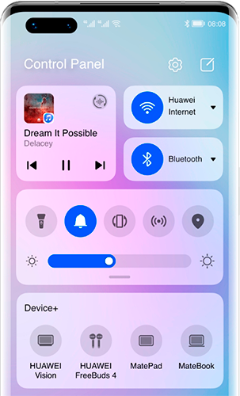

EMUI (от Emotion UI) — оболочка ОС Android, разработанная компанией Huawei для своих смартфонов.
Первые сведения о разработке появились на выставке е CTIA Wireless 2012
Первый показ EMUI состоялся на выставке IFA 2012; также на этой выствке можно было высказать свои предложения на счёт удобства интерфейса и пожелания новых функций.
Первое устройство с оболочкой EMUI стал Huawei Ascend P1 с Android 4.0
Новая версия оболочки выходит каждые 2 недели, а стабильный релиз — раз в месяц
После EMUI 5.1 компния изменила нумерацию, пропустив 6 и 7 версии. EMUI 8.0 была основана на Android 8.0. С этого момента, номер версии оболочки соответствовал номеру верси Android.